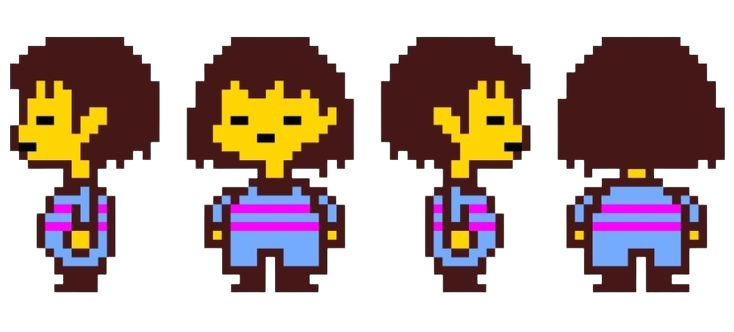

HOME/ |
FRISK/ |
BOSSES/ |
AÇÕES/ |
CRIADOR |

FRISK
Frisk é a protagonista de Undertale, um jogo onde uma criança humana cai no Subterrâneo, um mundo habitado por monstros.
Frisk não tem falas próprias, o que faz com que o jogador controle suas decisões e atitudes durante a jornada. Dependendo das escolhas feitas, ela pode seguir caminhos diferentes, como ser pacífica com os monstros, lutar contra eles ou misturar as duas abordagens.
Essas decisões mudam completamente a história e levam a finais diferentes, tornando Frisk um personagem central para o desenvolvimento da narrativa do jogo.

História detalhada
Frisk é a protagonista de Undertale. A história começa quando a criança sobe o Monte Ebott e cai em uma enorme abertura, chegando ao Subterrâneo, um lugar onde os monstros vivem presos após uma antiga guerra contra os humanos.
Logo no início da jornada, Frisk conhece diversos personagens, como Toriel, que tenta protegê-la, e depois encontra monstros como Sans, Papyrus, Undyne, Alphys e Asgore Dreemurr. Durante a aventura, Frisk pode escolher resolver conflitos pela violência ou pela compaixão, conversando, ajudando e poupando os inimigos.
As escolhas do jogador determinam o rumo da história. Na Rota Pacifista, Frisk faz amizade com os monstros e ajuda a quebrar a barreira que os mantém presos. Na Rota Neutra, algumas criaturas sobrevivem e outras podem morrer, resultando em finais variados. Já na Rota Genocida, Frisk elimina todos os monstros encontrados, mudando completamente a narrativa e enfrentando consequências muito mais sombrias.
Embora Frisk quase nunca fale, sua determinação é uma característica essencial. Ela consegue salvar o progresso, voltar após derrotas e influenciar o destino de todos no Subterrâneo. Por isso, Frisk representa a ideia de que as escolhas do jogador têm impacto real na história de Undertale.